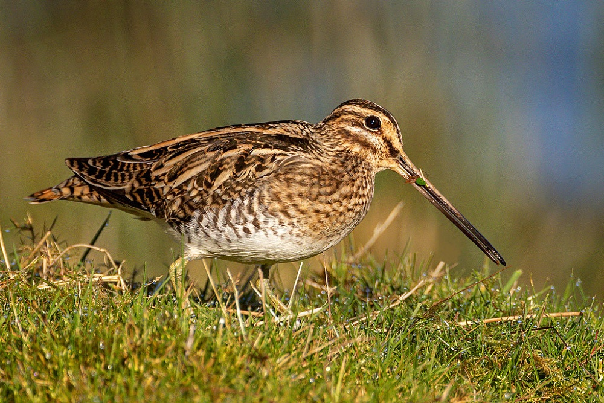

البكاسينCommon Snipe
Gallinago gallinago
مهاجرMigratory
يُعرف البكاسين علميًا باسم Gallinago gallinago، وينتمي إلى فصيلة القطاعيات (Scolopacidae) ضمن رتبة الخوّاضاويات (Charadriiformes)، وهو طائر خوّاض متوسط الحجم ذو منقار طويل مستقيم يستخدمه بحساسية عالية للتنقيب في الطين الطري، وريش بني مرقّط بخطوط طولية متباينة يمنحه تمويهًا ممتازًا بين الأعشاب والقصب، ويشتهر بطيرانه المتعرج السريع المفاجئ عند الإزعاج. هذا الطائر مهاجر (M) في العراق، إذ يفد إليه شتاءً بأعداد كبيرة من مناطق تكاثره في شمال أوروبا وسيبيريا، ويعيش في الأهوار والمستنقعات الضحلة والمروج الرطبة ذات الغطاء النباتي الكثيف.
The Common Snipe is scientifically known as Gallinago gallinago, belonging to the sandpiper family (Scolopacidae) within the order Charadriiformes. It is a medium-sized wading bird with a long, straight bill it uses with high sensitivity to probe soft mud, and mottled brown plumage with contrasting longitudinal stripes giving it excellent camouflage among grass and reeds, known for its sudden, fast, zigzagging flight when disturbed. This bird is migratory (M) in Iraq, arriving in large numbers in winter from its breeding grounds in northern Europe and Siberia, living in marshes, shallow swamps, and wet meadows with dense vegetation.
يصنَّف البكاسين ضمن الأنواع غير المهددة (Least Concern) وفق الاتحاد الدولي لحفظ الطبيعة، بفضل انتشاره الواسع وأعداده العالمية الكبيرة. ويسهم البكاسين في النظام البيئي العراقي عبر تغذيته على الديدان والحشرات واللافقاريات الدقيقة في الطين الرطب، ويُعد حضوره الشتوي الكثيف في الأهوار والمستنقعات مؤشرًا على غنى هذه البيئات بالحياة اللافقارية الدقيقة التي يعتمد عليها هذا النوع المتخصص في التغذية.
The Common Snipe is classified as Least Concern by the IUCN, thanks to its wide distribution and large global population. It contributes to Iraq's ecosystem by feeding on worms, insects, and fine invertebrates in wet mud, and its dense winter presence in the marshes and swamps indicates the richness of these environments in the fine invertebrate life this specialized feeder depends on.